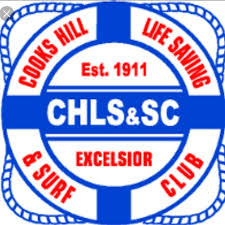

Water Safety
Carnival assignments and information
Water Safety
Cooks Hill carnival water safety team
Event assignments
Water Safety requirements and assigned personnel are managed inside each calendar event under Carnival Roles.
Open calendar